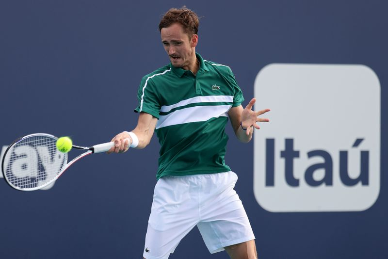

Medvedev comes clean: ‘I don’t like clay’
(Reuters) – Daniil Medvedev has risen to No.2 in the world on the back of his incredible consistency during the hardcourt swing but the Russian says he will be outside his comfort zone when he takes to the clay for this week’s Monte Carlo Masters.
Medvedev replaced Rafa Nadal as No.2 last month, becoming the first player outside the Spaniard, Roger Federer, Novak Djokovic and Andy Murray to be ranked in the top two since Lleyton Hewitt in July 2005.
But all 10 of his career titles have come on hard courts and the 25-year-old has never managed to get past the first round of the French Open on the red clay at Roland Garros in four attempts.
'Honestly, there’s nothing I like on clay,' Medvedev told reporters with a wry smile on Sunday.
'There’s always bad bounces, you’re dirty after playing.I really don’t enjoy playing on clay.'
Medvedev reached his second Grand Slam final at the Australian Open in February on the back of a 20-match winning run that saw him pick up trophies at the Paris Masters, ATP Finals and team-based ATP Cup.
His run included 12 straight wins over top-10 opponents and ended with defeat to top-ranked Novak Djokovic in the final at Melbourne Park.
The Russian, who lives in Monte Carlo, had one of his best results on clay two years ago when he beat Djokovic on his way to the semi-finals of the ATP Masters 1000 event but says it is difficult to adapt his game to the surface.
'Mentally for me the most important is to know that some shots that maybe would be winners or I would win the point on hard courts, it’s definitely not the case on clay courts,' he said.'Working on putting some more spin, some more trajectory.
'All of this is tough because for nine-10 months, I’m playing like I’m used to, then I have to change it for two months, still keeping the things that I do well also.'
Medvedev has a bye in the first round in Monte Carlo and will play the winner of the match between Serbian Filip Krajinovic and Nikoloz Basilashvili of Georgia.
(Reporting by Sudipto Ganguly in Mumbai; editing by Peter Rutherford)
Posted On: 2021-04-12T00:00:00

Content Date: 2021-04-12
Download Date: 2021-04-16
Document ID: L0C049V70